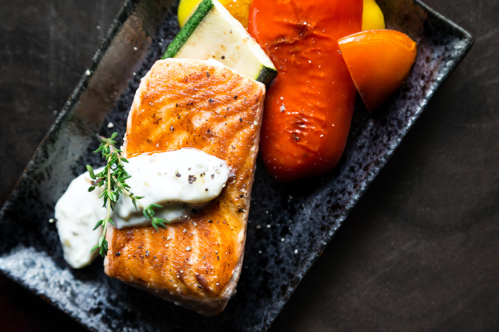

Welcome to Healthy Recipes
We provide a wide range of healthy and delicious recipes to help you maintain a balanced diet and improve your health.
Evening meals
- Salmon with roasted vegetables
- Chicken stir-fry
Ingredients: 1 (12-ounce) salmon fillet 1 tablespoon olive oil 1 teaspoon salt 1/2 teaspoon black pepper 1/2 cup chopped onion 1/2 cup chopped red bell pepper 1/2 cup chopped green bell pepper 1/2 cup chopped zucchini 1/2 cup chopped yellow squash 1/4 cup chopped fresh parsley Instructions: Preheat oven to 400 degrees F (200 degrees C). Brush the salmon fillet with olive oil and season with salt and pepper. Place the salmon fillet on a baking sheet lined with parchment paper. In a large bowl, toss together the onion, bell peppers, zucchini, yellow squash, and parsley. Spread the vegetables around the salmon fillet. Bake for 15-20 minutes, or until the salmon is cooked through and the vegetables are tender. Serve immediately.
Ingredients: 1 tablespoon olive oil 1 pound boneless, skinless chicken breasts, cut into 1-inch pieces 1/2 teaspoon salt 1/4 teaspoon black pepper 1/2 cup chopped onion 1/2 cup chopped red bell pepper 1/2 cup chopped green bell pepper 1/2 cup chopped broccoli florets 1/2 cup snow peas 1/4 cup soy sauce 1 tablespoon rice vinegar 1 tablespoon honey 1 teaspoon sesame oil Instructions: Heat the olive oil in a large skillet or wok over medium-high heat. Add the chicken and cook until browned on all sides. Season with salt and pepper. Add the onion, bell peppers, broccoli, and snow peas and cook for 5-7 minutes, or until the vegetables are tender-crisp. In a small bowl, whisk together the soy sauce, rice vinegar, honey, and sesame oil. Pour the sauce over the chicken and vegetables and cook for 1 minute more, or until the sauce is heated through. Serve immediately.

These are just a few ideas for healthy evening meals. There are many other possibilities, so get creative and find what you like best!